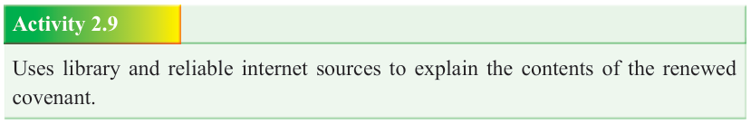

Form Two
Tanzania Institute of Education (TIE)
Bible Knowledge
37

The covenant renewed
The Lord accepted Moses’ appeal, hence, forgave the Israelites and the covenant was renewed (Exodus 34:1-35). The context of the renewal of the covenant involved the following: Moses was told to cut two tables similar to the former ones. The
Lord commanded Moses to go alone up the mountain. Moses stayed in the mountain for forty days and night without eating and drinking. Moses wrote the table of the renewed covenant while the former ones were written by God. When he came down
Moses called Aaron and the rulers of the community and enjoined them what God spoke to him. When Moses came down from the mountain his face was radiant a sign that he was at God’s presence.
Contents of the renewed covenant
The renewed covenant had the following contents: God Promised to give the people of Israel the land of Canaan; the Lord promised to drive out the Amorites, the
Canaanites, the Hittites, the Perizzites, the Hivites and the Jebuzites (Exodus 34:
10-28); He warned the people not to make pacts with the inhabitants of the land lets they prove a snare in their community; God commanded them to tear down their altars, smash their cultic stones and cut down their sacred poles; The Israelites were warned not to make idols and worship them; and finally, they were admonished to observe the Passover and labour for six days, to respect the Sabbath.
Activity 2.9
Uses library and reliable internet sources to explain the contents of the renewed covenant.

Indicators of Moses leadership qualities: Moses: a servant leader
Leadership is defined as the ability of an individual to ‘lead’, influence, or guiding other individuals, teams, projects or institutions toward the intended destination. As the history of Exodus demonstrates, Moses was a leader, not perfect, but indeed, a great man of God. Born a Hebrew, yet raised as an Egyptian boy by the Egyptian princess. Moses received his calling to leadership through the voice of the Lord that spoke to him from a burning bush. After wresting with the Pharaoh through the ten plagues, Moses led the people of Israel towards the Red Sea. Performing his leadership in an extraordinary way. Moses became the Lord’s instrument in providing water and food in the wilderness. Moses is a legend of all leaders in the
Bible, a leader who not only had regular encounter with God, but equally received the Ten Commandments from the Lord, administered them and developed numerous
Mosaic Laws, and more significantly, wrote the first five books of the Bible, known as the Pentateuch. For forty years, he led the people of Israel toward the Promised